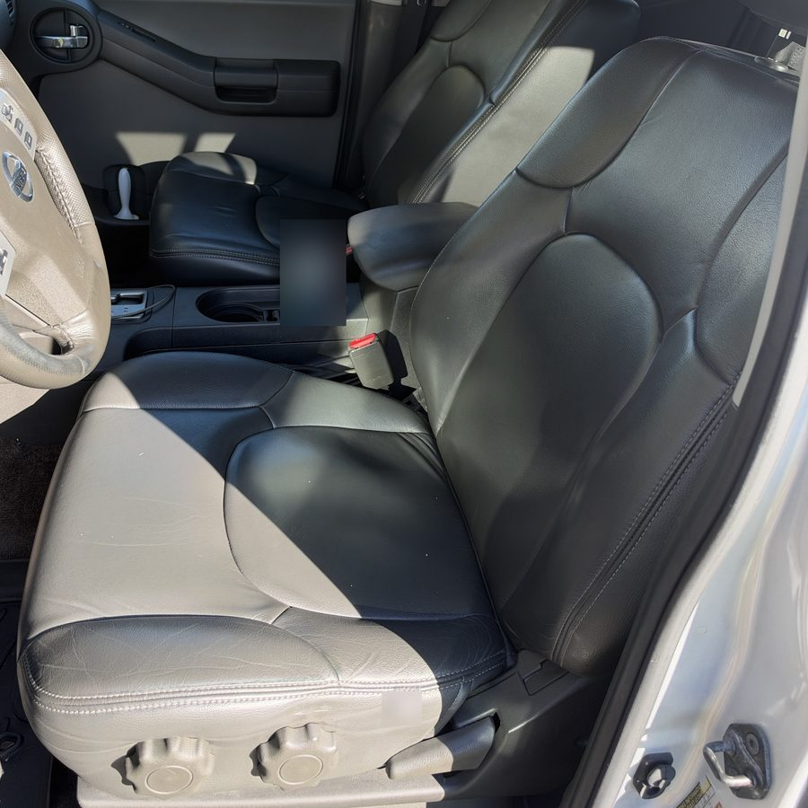
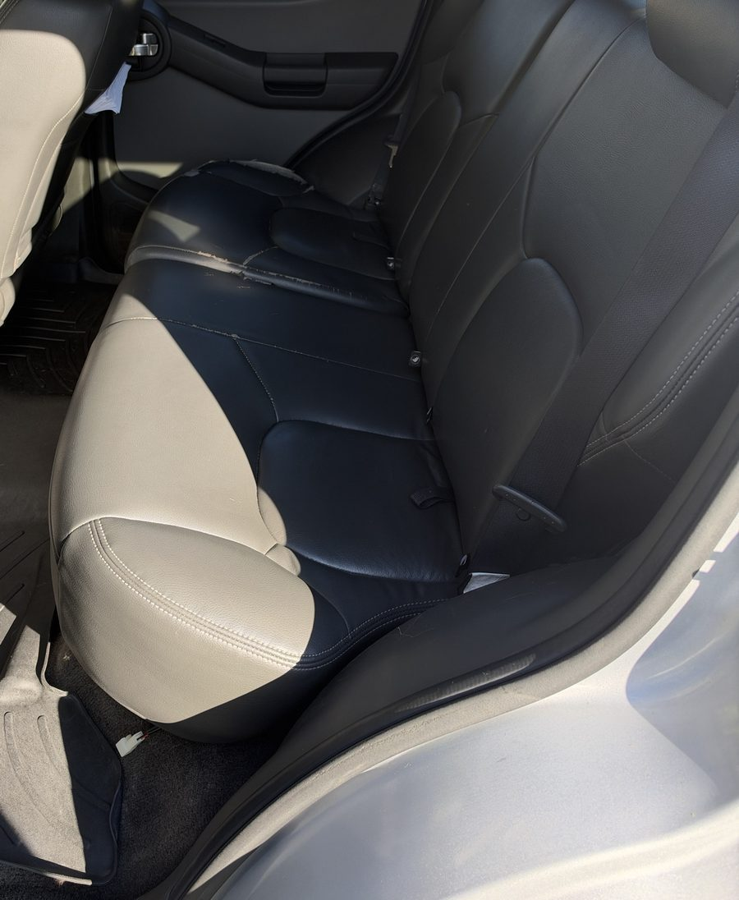

Recent work · Detail, correction & headlights
A silver Xterra, inside and out.
An older Xterra, faded all over, covered in dog hair, with a dirty headliner and a rear seat that was already torn. About a day's work: a decontamination wash, a Grade II paint correction and a ceramic sealant, the faded trim restored, the headlights restored, and the interior steam-cleaned with the carpets extracted and the headliner cleaned with a low-moisture method. Cleaning doesn't repair torn or cracked leather, and the photos show that.
- Time on the car
- about 1 day
- Paint
- Grade II
- Headlights
- Grade II
- Torn seat
- not repaired


Both photos are of the interior. We don't have after photos of the paint, trim or headlights on this car, so this page doesn't show those results.
What we found
- An old, worn truck with everything faded: paint, trim and headlights.
- Dog hair across the interior.
- A dirty headliner.
- Rear seat leather that was already torn and cracked before the job.
What we did and why
This job was done before our detail levels existed, so it was booked item by item. The grades below are the ones on today's menu.
Outside
- Decontamination wash. Bonded iron, tar and road film dull paint, and a regular wash can't reach them. They also have to come off before any polishing pad touches the paint, or the pad grinds them in.
- Paint correction, Grade II. A one-step compound and polish, which takes out much of the marring and haze and brings back gloss in a single step. Polishing removes clear coat, and clear coat doesn't grow back, so we use the least aggressive method that does the job (why we measure first).
- Ceramic sealant on the corrected paint, so the new gloss has a protective layer on it.
- Trim restored with a ceramic trim coating. Faded black trim is weathered plastic. A trim coating restores the color and adds a protective layer, instead of an oily dressing that washes off.
- Headlight restoration, Grade II: sanded, polished and coated. A hazed lens has lost its factory UV coat; sanding removes the failed layer, and a new UV coating stands in for it (how it works).
Inside
- Dry work first. Hair and loose soil vacuumed out before anything wet touches the interior, because wet hair and dust turn to mud in the seams.
- Steam clean inside, each surface wiped straight away. Never on screens, the instrument cluster or airbag covers.
- Ceramic detailer on the interior plastics, for a clean, protected finish without a greasy shine.
- Carpets: wet extraction. The extractor sprays cleaning solution into the carpet and vacuums it straight back out, so the soil leaves with the water instead of drying back into the fibers.
- Headliner: dry extraction, a low-moisture method. A headliner is fabric over a foam backing, glued to the roof board. Too much moisture can weaken that adhesive and let the fabric sag.1 So the headliner gets as little moisture as possible, and no steam.
What it took
About a day on the truck. The interior photos show the seats, console and door panels clean. The rear bench is clean, and the torn, cracked leather on the far seat is still there.
Honest limits: steam cleaning restores cleanliness, not damaged leather. A tear or a crack in the leather's finish needs upholstery work, which is a separate job and not something we do. Creased leather on an older truck stays creased after a clean. On the paint, a one-step correction improves marring; deeper scratches can be improved, not always removed.
The interior photos were taken from different angles than the before photos, so we show them as after shots rather than a side-by-side.
Care
- Paint: pH-neutral soap, two buckets, and dry it after washing; no automatic brush washes (why).
- Headlights: keep bug and tar removers and strong degreasers off the lenses.
- A seat cover or blanket where the dog rides keeps hair out of the seams between visits.
- Leather: a damp microfiber for spills. The torn seat is upholstery work; cleaning can't close it.
- Headliner: no sprays or soaking at home. Blot a spot with a barely damp cloth.1